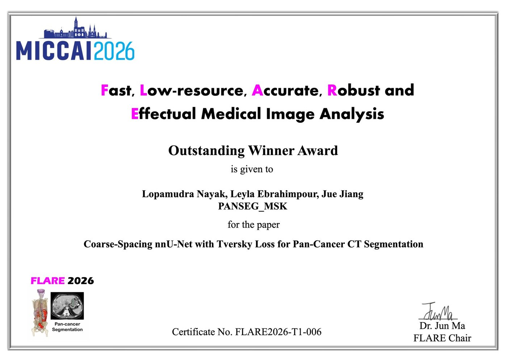
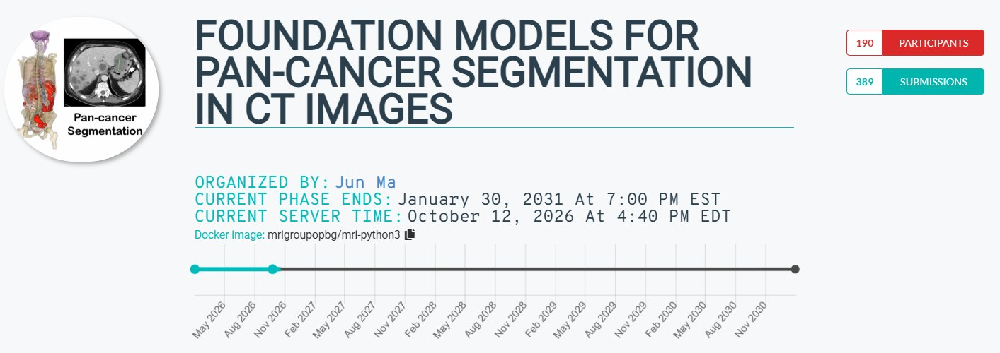

Award MICCAI 2026 · FLARE challenge · overall winner October 2026 Predictive Informatics Service, Department of Medical Physics, MSK
The challenge
FLARE — Fast, Low-resource, Accurate, Robust and Effectual medical image analysis — is a long-running challenge series held with the MICCAI conference. Its 2026 edition, Foundation Models for Pan-Cancer Segmentation in CT Images, asked teams to segment tumors anywhere in the body on CT with no human input. The training set holds more than 17,000 scans from many sources, spanning eleven datasets: head and neck, esophagus, lung, liver, adrenal, pancreas, kidney, lymph nodes, colon, endometrial, and whole-body imaging.
Three things made the challenge hard. Only the primary lesion is annotated in each scan, so a model that correctly finds additional tumors can still be penalized. Some validation scans contain no tumor at all, and any predicted foreground on those scores zero. And every solution had to run within strict time and memory limits on the organizers' hardware.
The lab's approach
Team PANSEG_MSK entered a deliberately compact model: a four-stage nnU-Net v2 trained at coarse voxel spacing, with a loss that combines Dice, cross-entropy, and a Tversky term. The Tversky term lets the model trade false positives against false negatives explicitly, which matters when most of the scan is background and whole scans can be lesion-free. The result is a network that segments a scan in roughly three seconds using about 1.4 GB of GPU memory.
Results
On the 50-case public validation set the model reached a mean Dice score of 0.492, against 0.477 for the same network without the Tversky term and 0.467 for the FLARE 2025 baseline run on the same cases. Adding the Tversky term raised the number of cases scoring above 0.5 Dice from 26 to 29, with the same six zero-Dice cases. Inference took about 2.8 seconds per scan on the hidden validation set.
| Model (50-case public validation set) | Mean Dice | Cases > 0.5 Dice |
|---|---|---|
| PANSEG_MSK — 4-stage nnU-Net v2, Dice + CE + Tversky | 0.492 | 29 / 50 |
| Same network without the Tversky term | 0.477 | 26 / 50 |
| FLARE 2025 baseline on the same cases | 0.467 | — |
The team ranked first of 190 teams from around the world and received the FLARE 2026 Outstanding Winner Award — the competition's top prize — for the paper Coarse-Spacing nnU-Net with Tversky Loss for Pan-Cancer CT Segmentation. The team notes that a deeper network may improve accuracy further, at the cost of inference time and compute.


The team
Lopamudra Nayak and Leyla Ebrahimpour are postdoctoral fellows in the Deasy Lab; Jue Jiang is a faculty collaborator in the Department of Medical Physics. The work was carried out in the Predictive Informatics Service, Department of Medical Physics, Memorial Sloan Kettering Cancer Center.